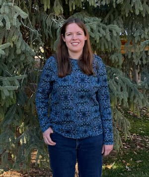

Kylene Hunter | WDD 130
My name is Kylene Hunter. I am a member of the Church of Jesus Christ of Latter-day Saints. I live in Spanish Fork, Utah. I was born in Provo, Utah, though sometime after that my family moved to California where I lived until I was in 3rd grade. We moved back to Utah and lived in Stansbury Park for 9 years before we moved to Spanish Fork Utah, where we have lived ever since then. My favorite hobby is arts and crafts. I've been drawing ever since I was little kid, I learned to crochet while I was in Young Womens, and I learned beading sometime after that. my favorite color is purple, and I have two brothers and one sister. I enjoy going on hikes with my family. I'm currently working as a grocery stocker, which I enjoy because I am organizing and refilling shelves with products that people buy. I became a student at BYU Pathway because while I enjoy my job, I also want to look for something I would want to do long-term that can allow me to support myself when needed.